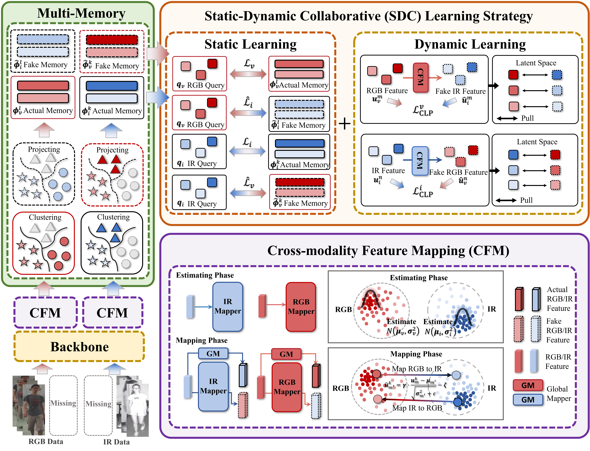

* Equal Contribution † Corresponding author

Unsupervised visible-infrared person re-identification (USL-VI-ReID) aims to train a cross-modality retrieval model without labels, reducing the reliance on expensive cross-modality manual annotation. However, existing USL-VI-ReID methods rely on artificially cross-modality paired data as implicit supervision, which is also expensive for human annotation and contrary to the setting of unsupervised tasks. In addition, this full alignment of identity across modalities is inconsistent with real-world scenarios, where unpaired settings are prevalent. To this end, we study the USL-VI-ReID task under unpaired settings, which uses cross-modality unpaired and unlabeled data for training a VI-ReID model. We propose a novel Mapping and Collaborative Learning (MCL) framework. Specifically, we first design a simple yet effective Cross-modality Feature Mapping (CFM) module to map and generate fake cross-modality positive feature pairs, constructing a cross-modal pseudo-identity space for feature alignment. Then, a Static-Dynamic Collaborative (SDC) learning strategy is proposed to align cross-modality correspondences through a collaborative approach, eliminating inter-modality discrepancies across different aspects \ie, cluster-level and instance-level, in scenarios with cross-modal identity mismatches. Extensive experiments on the conducted SYSU-MM01 and RegDB benchmarks under paired and unpaired settings demonstrate that our proposed MCL significantly outperforms existing unsupervised methods, facilitating USL-VI-ReID to real-world deployment.